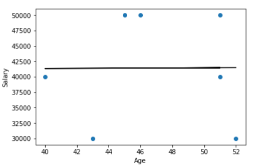

In this lab, we will use Python for data processing using SQL databases and Map-Reduce. This lab can be done in pairs. Computer Science majors cannot pair with each other. You can do it solo if you wish. Pairs are not required. If working in a pair, only submit from one person with both names on the files.
Note: If you are off campus, you MUST connect using VPN to UBC Okanagan (use: myvpn.ok.ubc.ca) to be able to access the databases.
Write a Python program to query a MySQL database and print the query results. Details:
lab7q1 with your name and student number. (0.5 mark)cnx = mysql.connector.connect(user='rlawrenc', password='test', host='cosc304.ok.ubc.ca', database='WorksOn')
"\t") are used to line up the data in columns nicely. (1 mark)conda install -c https://conda.anaconda.org/anaconda mysql-connector-pythonOtherwise, see these download/install instructions.
emp (eno CHAR(5), ename VARCHAR(30), bdate DATE, title CHAR(2), salary DECIMAL(9,2), supereno CHAR(5), dno CHAR(5), PRIMARY KEY (eno)) dept (dno CHAR(5), dname VARCHAR(40), mgreno CHAR(5), PRIMARY KEY (dno)) -- mgreno is the employee number of the manager of the department (may join with emp) proj (pno CHAR(5), pname VARCHAR(40), budget DECIMAL(9,2), dno CHAR(5), PRIMARY KEY (pno)) -- dno is the department that has the project (may join with dept) workson (eno CHAR(5), pno CHAR(5), resp VARCHAR(20), hours SMALLINT, PRIMARY KEY (eno,pno)) -- Use eno to join with emp. Use pno to join with proj.
pno pname dno dname hours numemp P4 Maintenance D2 Consulting 96 2 P3 Budget D3 Accounting 46 2 P1 Instruments D1 Management 36 2
Write a Python program to query a MySQL database to extract the age and salary of the employees with salary greater than $20,000 and less than $55,000. Print the age and salaries in descending order by salary then perform a regression to determine if there is a relationship between them. Details:
lab7q2 with your name and student number. (0.5 mark)cnx = mysql.connector.connect(user='rlawrenc', password='test', host='cosc304.ok.ubc.ca', database='WorksOn')
timestampdiff(YEAR, bdate, CURDATE()). (Click for details)float(). (1 mark)age salary 51 50000.00 46 50000.00 45 50000.00 51 40000.00 40 40000.00 43 30000.00 52 30000.00 Formula: 11.261261261261266 * x + 40900.9009009009 = y Predicted y-values: [41475.22522523 41418.91891892 41407.65765766 41475.22522523 41351.35135135 41385.13513514 41486.48648649] Prediction error: [ 8524.77477477 8581.08108108 8592.34234234 -1475.22522523 -1351.35135135 -11385.13513514 -11486.48648649] Residual error: 9855.944380912444
Create a Python program that uses Map-Reduce to analyze a data set. You must use map, filter, and reduce functions. Details:
lab7q3 with your name and student number. (0.5 mark)map function to the data set that will divide the value by 2 if it is even or multiply by 3 if it is odd. Print the result after the map function is applied. (2 marks)filter function that will keep the value if it is between 5 and 20 inclusive. Print the result after the filter function is applied. (1 mark)reduce function that will add the two values if the first value is greater than the second otherwise it will multiply them. Print the result after reduce function is applied. (1 mark)Result after map: [3, 1.0, 9, 2.0, 15, 3.0, 21, 4.0, 27, 5.0] Result after filter: [9, 15, 5.0] Result after reduce: 140.0
When complete, submit your code files using Connect:
lab7q1 - Python code for question 1. May be a .txt, .py, or .ipynb file.lab7q2 - Python code for question 2. May be a .txt, .py, or .ipynb file.lab7q3 - Python code for question 3. May be a .txt, .py, or .ipynb file.